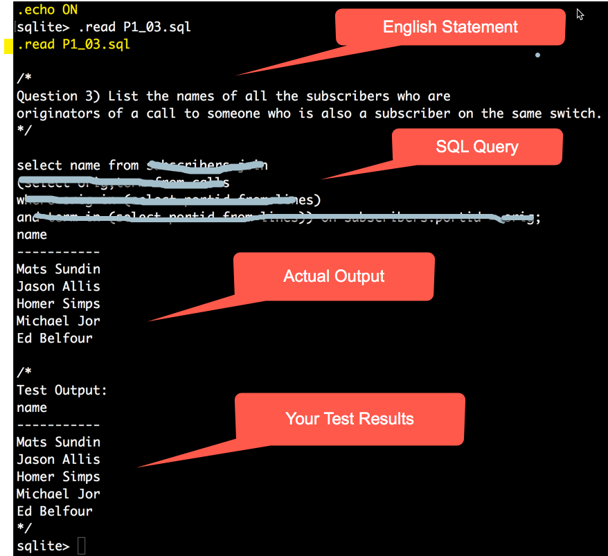

Revisions:
Revisions will be noted here.
Marking: This assignment is based on itemized requirements totaling 50 marks.
Marks are awarded, or deducted, based on requirements as follows:
| Req Type | Assignment Grading |
|---|---|
| R0.x | Critical Submission and Intent Requirements. Assignment (or problem in some cases) gets 0 if any critical submission requirement (shown in red) is not met. |
| R0.x | Good Practice Requirements. You lose 2 marks for any good practice |
| Rx.x | Design Requirements. You earn 2 marks for each design requirement (green) satisfied, well implemented, and demonstrated as requested; 1 mark if it's partly met, met but not well implemented, or met but not demonstrated; and 0 if it's not attempted or met. |
| Question | Devliverable to Submit |
|---|---|
| Problem 1 | Submit 10 .sql query files named P1_01.sql ... P1_10.sql (one for each problem P1.1-P.10) that adhere to requirements R1.1, R1.2, R1.3 |
| Problem 2 | Single SQL script called myTunes_assembly.sql |
(Marking Instructions in Red)
Total 50 marks
Problem 1 (40 marks)
Problems 1.1-1.10: 4 marks each for total
of 40 marks.
Give one mark for English query statement that accompanies the sql, 2 marks for the correct SQL logic, and 1 mark for correct output table.
For SQL they can either do a single query or could make temporary tables and break things up into smaller queries. We are not judging performance, just whether the correct result is produced.
Problem 2 (10 marks) Two marks each for problems Requirements 2.1-2.5 (0 marks if not implemented; 1 if partly implemented; 2 if fully implemented and working.
In this assignment you will get practice doing sql queries.
Problem 1 consists of some questions relating to the telephone switching database we have examined before. It stores information about subscribers, lines, trunks, calls in progress, services lines subscribe to, routing information used by trunks. You need to answers the query questions using SQL.
The background material for this assignment are the videos entitled SQL 1 and SQL 2 and the SQL examples from the SQL section of the course notes. Also the thinking for solving these problems is the same as that demonstrated in the videos on Relational Algebra.
The course notes provides an example sqlite database telephone_switch_rev4.db that you must use for this question. Here are some more details about this database.
The video Telephone Database Rev 4 on the course schedule website walks you through the scenario, ER model, and schema for this database.
Digit translations during a call works like this. The dialled digits are entered into the call table along with the originator information (portid, channel). Then the dialled digits are used to find the terminator which could be a line, a trunk, or a treatment.
Choosing the terminating facility based on the dialed digits is called translation. It works as follows. The dialled digits in the call table are compared to the directory numbers of the lines. If one matches then that is the line that was called and would be entered as the terminator of the call and the line's channel state updated from IDLE to BUSY. If the called line however turns out to be BUSY, a busy treatment facility would be used as the terminator instead.
Suppose however a caller dials a number that is not among those of the lines. That means the digits represent a called party attached to another switch and so the call will connect to the appropriate trunk instead of a line. Trunks connect switches to each other and support up to 24 conversations at once. To select the appropriate trunk the trunk_routes table is used and is interpreted as follows.
The preferred trunks to use in a call are those for which the area and office code match those of the dialled digits. Otherwise (less preferred) trunks that match the area code and have 000 for the office code can be used. If there are no matches but a valid phone number was dialled a trunk serving area=000 and office=000 can be used (least preferred option). Several trunks could satisfy any one of the above criteria which would make them an equally preferred choice.
The following problems must all be solved by coming up with the required SQL queries. If necessary you can create temporary tables. In each case show the output of the table that shows the result. In all cases your query should still work if more data is added to the database or some data deleted. That is, don't hard code any data dependent values in the query based on what the tables currently contain.
(For these queries we will assume that an SQL CONTAINS operation is not available -which it is not with SQLite, MySQL and many other relational database products).
For each problem you must provide a query script and sample output: Put your output as a comment at the bottom of the query script so we see it when it runs. Notice you are also asked to provide an english statement of the query with your script. That way when we run your script with .echo ON we will see the english statement, the query, your sample output and the actual output we get. Name your scripts P1_01.sql for question 1 etc. So you will submit 10 individual script files each with the following format:
/* Problem 1.3 List the names of all the subscribers who are originators of a call to someone who is also a subscriber on the same switch (i.e. a line to line call) */ SELECT portid, name from ...; /* Test Output: name ----------- Mats Sundin Jason Allis Homer Simps Michael Jor Ed Belfour */
R1.1 [1 mark] Include an English description of what the query is supposed to find (already done for you, but repeat it with your answer so the TA can see it when they are running your code) as a comment at the top of your sql query script. Note: the English provided for the question is OK, you don't have to re-phrase it, just have it in your script so we see it when the script is run.
R1.2 [2 marks (0 not done, 1 partly OK, 2 all good)] Your SQL query code.
R1.3 [1 mark] The anwer table you obtained put as a comment at the bottom of the sql script so we can compare it to answer we get when we run the script.
Submission: submit 10 individual sql scripts called P1_01.sql - P1_10.sql.
When your script for a problem is run it would look something like the following to the marker (needs .echo ON when running in sqlite3 command interface to show the query statement on the output).

Problem 1.1 Produce a table consisting of the names and addresses of the subscribers and their phone numbers.
Problem 1.2 Produce a table that lists all the area code, office code combinations and the number of subscribers with that area code, office code combination.
Problem 1.3 List the names of all the subscribers who are originators of a call to someone who is also a subscriber on the same switch (i.e. a line to line call)
Problem 1.4 Find the names and address of all subscribers who subscribe to all of the available services. (Note the result for the current data might be empty but your query should work if the TA's add more data to the databse.)
Problem 1.5 Find the names of all the subscribers who subscribe to at least three services.
Problem 1.6 Produce a table that lists the most popular service (or services). That is, give the name of the service that has the most subscribers.
Problem 1.7 Write an SQL query that will produce in one table a list of all the acceptable trunks that can be used to route a call to the 416 area code, office code 334. This query should list the trunks in the order of preference. (The answer should list trunks with routes 416,334 then those with 416,000 and then those with 000,000 for example)
Problem 1.8 Write an SQL query that would find if the line with phone number (613) 712-0024 is currently available to take a call because its channel is IDLE. That is, select the portid, directory number, and channel state of line (613) 712-0024.
Problem 1.9 Do the same as question 1.7 but this time only include trunks that have at least one 'IDLE' channel. That is, write an SQL query that will produce in one table a list of all the acceptable trunks that can be used to route a call to the 416 area code, office code 334 have at least one idle channel. This query should list the trunks in the order of preference. (The answer should list trunks routes 416,334 then 416,000 then 000,000 for example)
Problem 1.10 Produce a table that lists the name of all the service-subscribers that subscribe to at least all the same services as Jason Allison subscribes to but possibly others as well. Jason Allison rents the line with portID=2. (So this is the classic "subset" query.)
In assignment 1 you were asked to provide sql scripts that would contribute two CDs worth of information to a database that contained a cds and songs table. A similar question was done in the previous offering of the course. The TAs ran the student's answer scripts and each TA produced a database consisting of the contributions of the students they marked. We have dumped those individual databases into SQL scripts (one script per TA from winter 2021). In this problem we want you to write a script that would read all those individual scripts and create one single database with all the data from those scripts. Thus your script will have to read the individual scripts from and end up with a single database with all the data. The scripts are included with this assignment in the folder myTunes w2021 TA scripts. Here are the specific requirements.
Intent Requirement R0.1 Your script must read and make use of the TA files. That is, you cannot just cut and paste the information from these files and then ignore the files in your script. Your script should work even if new content is added to the TA files. 0 marks for this question if this requirement is not met.
Script Errors Requirement R0.2 Your script must NOT throw SQL or dot command erros if run against an initially empty database of a legitimate database created by a previous student. (Note your script will, of course, destroy old copies of the cds and songs table.) 0 marks for this question if this requirement is not met.
R2.1 Your script must be called myTunes_assembly.sql and may use both SQL commands and SQLite dot commands. The TA's will mark your script by executing.
sqlite3 myTunes.db
sqlite>.read myTunes_assembly.sql
on their console. The TA scripts will be in the same directory as your myTunes_assembly.sql script. In the command above myTunes.db could be either a non-existing database or a database that already contains a cds and songs table but these tables could be dropped by your script. This way the TA's can keep using the same database to run student scripts one after the other as each script would start by dropping the existing tables if they exist.
R2.2 You may not alter the files provided by the TA's in any way. When your script is being marked they will use their own copies of the files so any changes you make would not be picked up anyway.
R2.3 When your script has run the database should consist of ONLY a cds table and a songs table. There should not be any old or temporary tables that result from your script running. Your script can create other tables but must drop them before it completes. You can assume that when your script is run the database would either have no existing tables or only has a cds and songs table in it.
R2.4 Your resulting database should contain all the data represented by the winter 2021 TA scripts included with this assignment. (The TA's will run a query that counts the entries, for example). You can assume the TA scripts will be in the same directory as your sql script when we .read yours.
R2.5 Your script should be itempotent (and not throw any SQL or dot command errors when run).
The strategy for solving these problems would involve creating and altering and dropping tables using SQL commands. Perhaps copying data from one table to another using sql like
insert into table1 (col1, col2) select (colA,colB) from table2;
Also your script would likely have muliple .read commands to read the individual TA scripts. You should investigate whatever dot commands and sql commands you might need to do this.